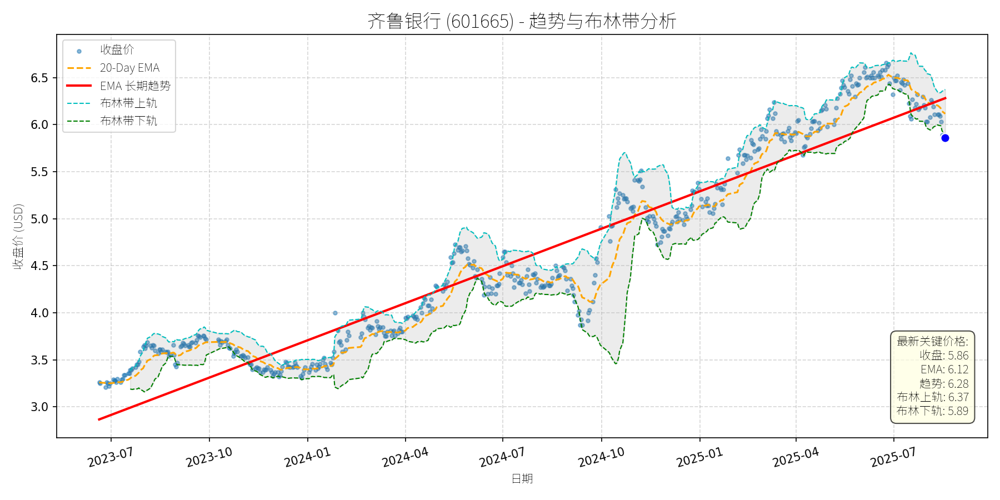

中国 (中证500)异动分析报告
报告生成日期: 2025-08-18
齐鲁银行 (601665)
R²: 0.923
斜率: 0.00
布林带穿透: 0.44%

分析师模型总结
### 1. 核心业务与基本面评估
齐鲁银行（601665）作为城市商业银行，核心业务包括公司银行业务、个人银行业务及资金业务，以区域化经营为特色，聚焦山东本地市场。结合基本面指标分析：
- **财务健康状况**：总资产规模（未直接披露，但市值360.62亿元对应城商行中等规模）支撑业务稳定性；资产负债率（通过 Debt To Equity=13.90推算，资产负债率≈93%）符合银行业高杠杆特征，属于正常水平；净利润率（Net Income/Revenue=13.72亿/31.65亿≈43%）处于银行业较高区间，说明成本控制与盈利转化能力较强。
- **盈利能力**：年化营收31.65亿元、净利润13.72亿元，虽规模小于股份制银行，但作为城商行，其盈利稳定性较好（未出现大幅波动）；基本EPS 0.22元，对应PE 6.59x，远低于A股银行板块平均PE（约8-10x），显示盈利性价比突出。
- **估值水平**：PB 0.65x（破净）、PE 6.59x，均处于A股银行股估值底部区间（城商行平均PB约0.8-1.0x）。低估值主要反映市场对区域银行资产质量的担忧（如地方政府债务、小微企业贷款风险），但未出现实质性利空，属于“预期性低估”。
**结论**：财务稳健（盈利稳定、杠杆合理）、估值显著偏低（破净+低PE），具备长期价值支撑。
### 2. 技术面与消息面分析
- **技术面信号**：图表显示，齐鲁银行2023年7月至2025年7月呈现**长期上升趋势**（红色EMA长期趋势线持续上行），期间股价从3元附近涨至6.5元以上，累计涨幅超100%。但2025年7月以来，股价从6.5元高位回调至5.86元，**当前价格显著低于长期趋势线（EMA长期趋势=6.28元）**，且跌至布林带下轨（5.89元）附近，处于超卖区间。
- **回调原因分析**：结合新闻，此次回调**无公司层面重大利空**，主要源于**板块轮动与市场情绪调整**：
- 8月13日、15日银行行业连续成为跌幅榜首位，主力资金净流出（8月15日行业净流出31.19亿元），而券商、电力设备、新能源等高成长板块领涨，说明市场资金从低估值、低波动的银行股流向高弹性板块；
- 齐鲁银行作为城商行，虽8月13日获资金净流入6382万元，但受行业整体拖累，股价随板块回调，属于“被动性下跌”。
### 3. 综合前景展望与量化判断
#### 核心投资逻辑
齐鲁银行是**基本面稳健、估值偏低的区域银行**，此次回调源于市场对“低估值板块”的短期抛弃，而非公司自身基本面恶化。长期来看，低估值（PB 0.65x）+ 稳定盈利（净利润率43%）+ 区域经济恢复（山东作为经济大省，小微企业与居民贷款需求回升）构成其价值回归的核心支撑；短期来看，技术面超卖（布林带下轨）+ 无实质性利空，具备反弹动力。
#### 短期展望（未来1-4周）
- **走势判断**：技术性反弹概率较高。
理由：当前价格（5.86元）略低于布林带下轨（5.89元），属于技术超卖区间；20日均线（6.12元）与长期趋势线（6.28元）形成短期支撑，市场情绪修复（银行板块资金流出趋缓）将推动股价反弹。
- **短期目标价**：6.12元（20日均线）。
涨跌幅空间：（6.12-5.86）/5.86≈4.4%。
#### 长期展望（未来3-6个月）
- **趋势判断**：**看好**，重回长期上升趋势的概率较大。
理由：
1. 基本面支撑：低估值（PB 0.65x）+ 稳定盈利（净利润率43%），符合价值投资逻辑；
2. 行业催化：经济恢复预期下，银行息差（净利息收入/生息资产）将逐步改善（2025年以来LPR下调趋缓，贷款端利率稳定，存款端成本控制加强）；
3. 技术面修复：长期趋势线（6.28元）仍是重要支撑，回调后将回归上升通道。
- **长期目标价**：6.50元（布林带上轨+长期趋势线延伸）。
涨跌幅空间：（6.50-5.86）/5.86≈10.9%。
### 总结
齐鲁银行此次回调是**无基本面利空的技术性调整**，短期超卖后将反弹，长期因低估值与稳健盈利具备价值回归潜力。建议短期关注20日均线（6.12元）的反弹力度，长期持有等待估值修复。